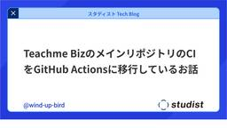
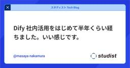
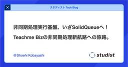

企業テックブログRSS
フィード
人気フィード
ブログ一覧
スタディスト Tech Blog - Medium
https://studist.tech?source=rss----1b85cc1f989a---4
スタディストがお届けする発展と成長の物語。技術、デザイン、組織、マネジメントなどを発信します。.
フィード
Continuous Context Engineering
スタディスト Tech Blog - Medium
28分前

Teachme BizのメインリポジトリのCIをGitHub Actionsに移行しているお話
スタディスト Tech Blog - Medium
3日前

Dify 社内活用をはじめて半年くらい経ちました。いい感じです。
1
スタディスト Tech Blog - Medium
4日前
ヘルプセンターにAIチャットボットを導入した話
スタディスト Tech Blog - Medium
5日前

非同期処理実行基盤、いざSolidQueueへ！Teachme Bizの非同期処理新航路への旅路
1
スタディスト Tech Blog - Medium
6日前
スタディストCREの現在地
1
スタディスト Tech Blog - Medium
7日前
Teachme Bizの障害時の対応フローの見直しと障害訓練を実施しました！
スタディスト Tech Blog - Medium
10日前
Devin + github-linguistでリポジトリ内の言語比率の推移を集計してもらう
スタディスト Tech Blog - Medium
12日前
開発本部全体でモデリング会を実施しました
スタディスト Tech Blog - Medium
13日前
CREチームで学んだ”ユーザファーストな開発”
スタディスト Tech Blog - Medium
14日前